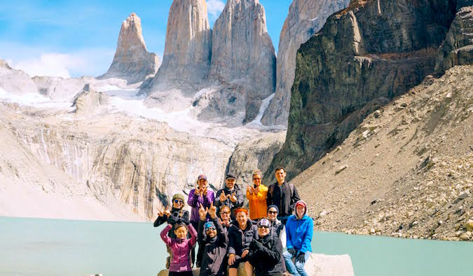

Home
About Me
THE NOMADIC NETWORK: THE NEW WAY TO MEET OTHER TRAVELERS
March 2, 2017 / By NomadicMatt

Building community while traveling
Every traveler needs a community. Stepping out the door into the wild unknown can be a daunting task, and planning such a trip can be overwhelming without the proper know-how.
Where do I book the best flights? How do I find the best travel insurance? What shots do I need? Where do I stay? How much of the language do I need to learn before I go? How much should I budget? Will I make friends? Will I be safe? What’s the best way to get money?
These questions — and a million others — all bubble to the surface when planning a trip, and it can be a challenge to address them all without help. While I have been incredibly lucky that my family and friends help and support my love of travel, not everyone has those same support systems. Not everyone has a community they can rely on when planning a trip.
Years ago, I launched the community forums as a place where travelers could interact, chat, get to know community members, and ask the little questions that didn’t always lend themselves to long blog posts. It provided another way to get your travel questions answered. Fast forward to now and we have over 7,000 members and do regular contests, member features, polls, and have a book club.
But I’ve always wanted to do even more than that. I’ve been wanting an in-person community. As incredible as a virtual community is, people are still social animals. And the truth is that the Internet will never replace the benefits of human interaction.
I’ve always been inspired by my friend Scott’s LYL worldwide community meet-ups and wanted to create something similar — but with a practical twist. I wanted to create an in-person community and planning event where people could meet future travel partners and community members, as well as learn practical advice, pick up resources, and take action right away!
I’ve always been inspired by my friend Scott’s LYL worldwide community meet-ups and wanted to create something similar — but with a practical twist. I wanted to create an in-person community and planning event where people could meet future travel partners and community members, as well as learn practical advice, pick up resources, and take action right away!
I’ve always been inspired by my friend Scott’s LYL worldwide community meet-ups and wanted to create something similar — but with a practical twist. I wanted to create an in-person community and planning event where people could meet future travel partners and community members, as well as learn practical advice, pick up resources, and take action right away!